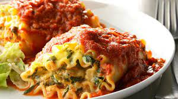

Avocatta Lasanga Rolls

Description:
These avocado stuffed lasagna rolls are so tasty you will forget there is no dairy in them!
Only 30 minutes and you will be scarfing down this delectable vegan lasagna.
Ingredients:
- 4 lasagna noodles, cooked according to package directions
- 2 large avocados, quartered
- 2 Tbsp vegan parmesan
- 1/4 tsp garlic powder
- 1 tsp dried basil
- 1/4 cup baby spinach, chopped
- 1 Tbsp fresh parsley, chopped
- salt and pepper to taste
- 1/2 cup or more marinara sauce
Directions:
- Preheat the oven to 350°F
- Place a large pot of water on the stove to boil.
Cook lasagna noodles according to package directions. Drain and set aside.
- Place avocados in a medium bowl and mash with a potato masher
- Add the vegan parmesan, garlic powder, basil, spinach, parsley, salt, and pepper. Stir to combine.
- Prepare a baking dish by covering the bottom with some of the marinara sauce
- Lay one lasagna noodle on a flat surface and spread some of the mixture on its entire length.
Roll the noodle into a cylinder and place it upright in the dish prepared with the marinara.
- Repeat the above with all remaining noodles
- Cover loosely with foil and bake in the oven for 20 minutes
- Drizzle with extra marinara and parmesan, and garnish with fresh parsley if desired